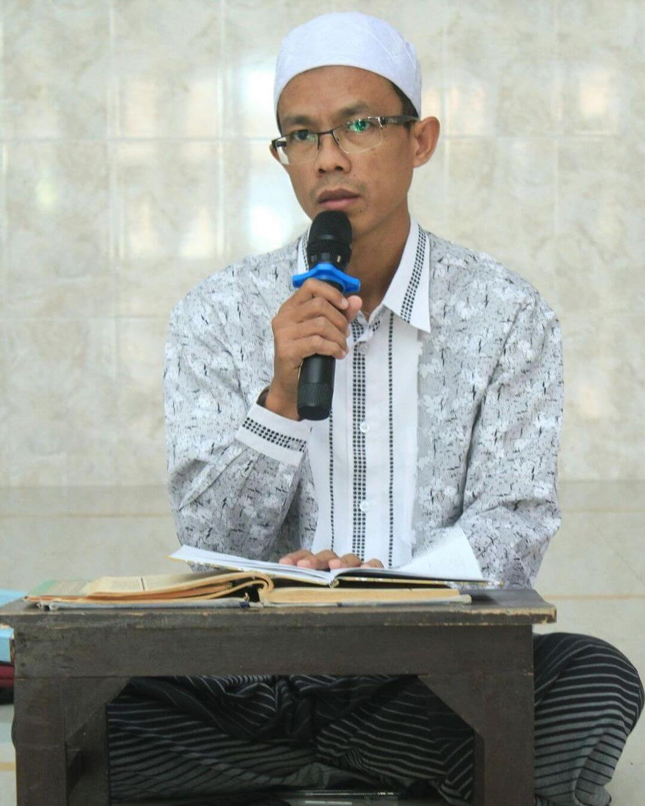

LURAH ASRAMA PUTRA AL - ISTIQOMAH 2026/2027
Dika Saputra
Follow on Instagram– Imam Syafi'i
Ayo MondokAsrama Al-Istiqomah merupakan salah satu asrama santri putra di bawah naungan Pondok Pesantren Nurul Huda Munjul yang dikelola oleh Yayasan Nurul Huda Munjul, sebuah pesantren yang berpegang teguh pada ajaran guru mursyid yakni Sayyidi Syaikhunal Mukarrom dengan manhaj Ahlussunah wal Jamaah berlandaskan prinsip Asy-Syahadatain di Kabupaten Cirebon, Jawa Barat. Di Asrama Al-Istiqomah, para santri dididik untuk memperdalam ilmu agama, memperkokoh akidah, membiasakan adab yang luhur, dan membentuk kepribadian muslim sejati. Dengan suasana pondok yang penuh kedisiplinan, kasih sayang, dan semangat ukhuwah islamiyah, santri diarahkan untuk menjadi generasi yang berilmu, berakhlak mulia, serta bermanfaat bagi umat dan agama. Belajar di bawah bimbingan para asatidz yang istiqamah, santri di Asrama Al-Istiqomah merasakan kehangatan pembinaan ruhani dan ilmiah yang membawa pada kehidupan islami yang sesungguhnya — menapaki jalan menuju ridha Allah Subhanahu wa Ta'ala.
Beliau adalah salah satu sesepuh yang sangat berjasa dalam perjalanan Pondok Pesantren Nurul Huda Munjul, khususnya dalam mengasuh dan membimbing santri di Asrama Al – Istiqomah. Dengan penuh kesabaran, keteladanan, dan keikhlasan, beliau mendidik para santri untuk menjadi insan berilmu dan berakhlakul karimah, berpegang teguh pada ajaran Ahlussunnah wal Jamaah. Kini, meskipun beliau telah wafat, jasa dan ilmu yang beliau tanamkan tetap hidup di hati para santri dan menjadi amal jariyah yang terus mengalir. Semoga Allah SWT. senantiasa melimpahkan rahmat dan menempatkan beliau di tempat terbaik di sisi-Nya. Aamiin.

Beliau adalah salah satu putra dari KH. Amin Khazim (Alm) yang dengan penuh keikhlasan dan semangat meneruskan perjuangan ayahandanya dalam membina dan mengasuh santri di Asrama Al – Istiqomah. Dengan kesabaran, keteguhan, dan ketelatenan, beliau berusaha membimbing para santri agar menjadi generasi yang berilmu, beradab, serta teguh dalam menjaga ajaran Ahlussunnah wal Jamaah. Di bawah asuhan beliau, nilai-nilai keilmuan dan akhlak mulia terus diwariskan sebagai bekal untuk kehidupan dunia dan akhirat. Semoga perjuangan beliau menjadi amal jariyah yang mengalir tanpa henti, dan diberikan keberkahan serta taufik dalam setiap langkahnya. Aamiin.
Kamar mandi bersih dan nyaman untuk santri.
Area khusus untuk mencuci dan menjemur pakaian.
Tempat kegiatan, acara, dan pertemuan santri.
Mengkaji Kitab Kuning Bersama Masyaikh.
Fasilitas kamar bersih dan nyaman bagi para santri.
Perpustakaan lengkap untuk menunjang kegiatan belajar santri.
Membentuk karakter, kedisiplinan, dan kecintaan terhadap ilmu serta agama.
Dengan pembinaan disiplin dan pengamalan ajaran Asy-Syahdatain dalam kehidupan sehari-hari, Pondok Pesantren Nurul Huda Munjul mendorong santri untuk mengembangkan minat, bakat, dan potensi mereka lewat kegiatan yang mendidik dan bermanfaat.
"Ayo Manut Lan Miturut Ning Gurune
Mumpung Ana Kang Nuduhake Dedalane"–Nadzom Sayyidi Syaikhunal Mukarrom
Yuk mondok di Nurul Huda Munjul, khususnya di Asrama Al-Istiqomah! Di sini kamu bakal belajar ngaji, dapet teman baru, pengalaman seru, dan dibimbing jadi pribadi yang lebih baik dan bermanfaat. Mau jadi santri keren? Tempatnya di sini!
Beberapa pertanyaan yang sering diajukan tentang Pondok Pesantren kami.
Klik tombol di bawah untuk mengajukan pertanyaan kepada kami.